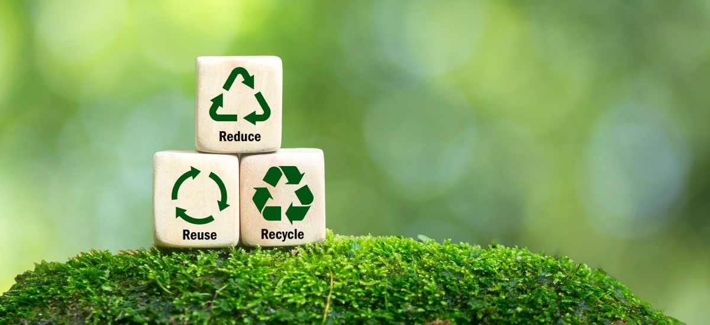
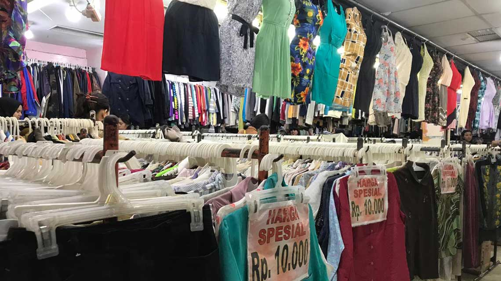
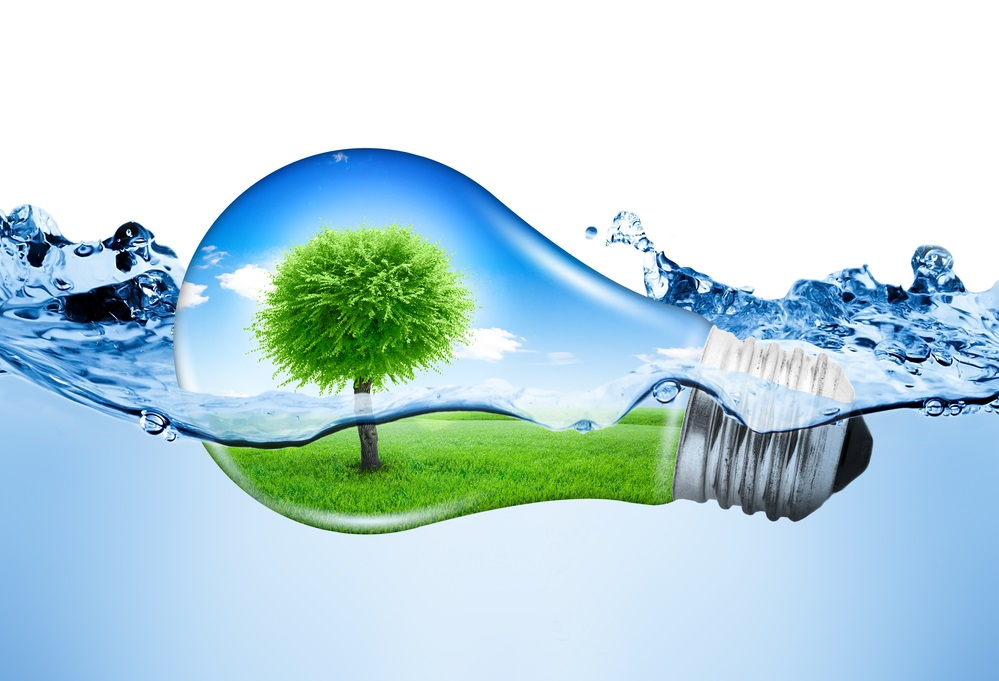
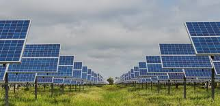

5 Panduan dan Tips untuk Hidup Berkelanjutan
Hidup berkelanjutan melibatkan pengambilan keputusan yang mengurangi dampak negatif kita terhadap lingkungan dan mendorong masa depan yang lebih baik bagi kita dan planet ini. Di Indonesia, dengan lebih dari 270 juta penduduk, tantangan lingkungan seperti deforestasi, polusi, dan penumpukan limbah mengancam keindahan alam dan keanekaragaman hayati negara ini. Dengan mengadopsi praktik-praktik berkelanjutan, setiap individu dapat berkontribusi dalam mengatasi masalah ini dan memastikan masa depan yang lebih baik bagi generasi mendatang.
1. Reduce, Reuse, Recycle
Reduce (Mengurangi)
Di negara seperti Indonesia, di mana budaya konsumen sedang meningkat, penting untuk menerapkan konsumsi yang penuh kesadaran. Dengan hanya membeli apa yang kita butuhkan dan menghindari pembelian impulsif, kita dapat mengurangi pemborosan dan mengurangi permintaan untuk produksi berlebih. Pahami juga konsep "planned obsolescence," di mana produk dirancang agar cepat rusak. Lawan hal ini dengan meneliti produk yang tahan lama dan mudah diperbaiki.
Reuse (Menggunakan Ulang)
Menggunakan kembali barang-barang yang sudah ada adalah salah satu cara paling efektif untuk mengurangi limbah. Misalnya, thrifting pakaian atau membeli pakaian bekas dari toko barang preloved dapat mengurangi kebutuhan akan produksi pakaian baru, yang memerlukan banyak sumber daya dan menghasilkan polusi. Begitu juga dengan perabotan bekas, seperti membeli meja atau kursi second-hand, yang dapat mengurangi limbah dan memperpanjang usia pakai barang-barang tersebut. Selain itu, Anda juga bisa memperbaiki barang-barang yang rusak daripada membuangnya, seperti memperbaiki sepatu atau peralatan rumah tangga yang masih bisa diperbaiki. Praktik ini tidak hanya mengurangi sampah, tetapi juga mendukung ekonomi berkelanjutan dan bisa menjadi pilihan yang lebih ekonomis.
Recycle (Mendaur Ulang)
Daur ulang adalah langkah penting untuk mengurangi sampah plastik, yang menjadi masalah besar di Indonesia. Setiap tahun, Indonesia menghasilkan sekitar 7,8 juta ton sampah plastik (World Bank, 2021), namun sayangnya hanya sebagian kecil yang berhasil didaur ulang. Sebanyak 4,9 juta ton sampah plastik tidak dikelola dengan baik, banyak yang dibuang sembarangan atau tidak terkumpul dengan benar, terutama di daerah pedesaan yang masih terbatas layanan pengumpulan sampahnya.
Untuk membantu mengatasi masalah ini, penting bagi kita untuk memilah sampah dengan benar. Pisahkan plastik yang bisa didaur ulang dari sampah lainnya, dan pastikan untuk membuangnya di tempat sampah yang tepat. Jika Anda tinggal di daerah yang belum memiliki akses pengelolaan sampah yang memadai, pertimbangkan untuk mendukung dan mengikuti program-program daur ulang lokal yang ada, atau bahkan mulai menginisiasi program serupa di komunitas Anda.
Selain itu, salah satu cara lain untuk mengurangi sampah plastik adalah dengan menghindari penggunaan plastik sekali pakai dan beralih ke alternatif yang lebih ramah lingkungan. Ingat, langkah kecil kita bisa memberi dampak besar dalam mengurangi polusi plastik, yang setiap tahunnya berakhir di laut melalui sungai-sungai yang membawa 83% sampah plastik ke samudra.
2. Belanja Barang Bekas
Belanja barang bekas memiliki manfaat baik dari sisi lingkungan maupun ekonomi. Dengan membeli barang bekas, individu di Indonesia dapat mengurangi permintaan akan produksi baru, yang sering kali menyebabkan pemborosan sumber daya dan peningkatan sampah. Pasar loak, toko barang bekas, dan platform online seperti Tokopedia atau Bukalapak menawarkan berbagai barang bekas yang masih berkualitas dan terjangkau. Selain itu, belanja barang bekas juga mendukung ekonomi lokal. Sebagai contoh, di kota-kota besar seperti Bandung dan Surabaya, banyak toko barang bekas yang menawarkan pakaian, furnitur, atau barang elektronik dengan harga lebih murah dan ramah lingkungan.
3. Hemat Air dan Energi
Ada banyak cara mudah yang bisa kita lakukan untuk menghemat air dan energi dalam kehidupan sehari-hari.
Matikan keran saat mencuci tangan atau menggosok gigi, mandi lebih singkat, dan hanya jalankan mesin cuci ketika sudah penuh. Ganti keran dan kepala pancuran dengan model yang mengalirkan air lebih sedikit. Jika toilet atau mesin cuci Anda sudah cukup tua, kemungkinan besar mereka menghabiskan banyak air. Jika memungkinkan, pertimbangkan untuk mengganti dengan model yang lebih efisien untuk menghemat air, listrik, dan juga uang.
Untuk menghemat energi, matikan lampu ketika keluar ruangan, cabut perangkat yang tidak digunakan, dan pastikan tahu apa yang Anda cari sebelum membuka pintu lemari es. Coba jemur pakaian jika ada ruang, dan gunakan AC dengan bijak.
4. Kurangi Emisi

Mengurangi emisi karbon sama pentingnya dengan mengurangi sampah di bumi. Salah satu cara untuk mendukung gaya hidup berkelanjutan adalah dengan membatasi emisi yang kita hasilkan.
Pesawat terbang adalah salah satu penyumbang emisi terbesar, bahkan perjalanan singkat pun bisa berdampak besar. Cobalah untuk mengurangi penerbangan dan pilihlah perjalanan darat atau laut. Jika penerbangan tak terhindarkan, pilihlah penerbangan langsung untuk mengurangi jejak karbon. Untuk perjalanan darat, manfaatkan transportasi umum, tumpangi teman atau rekan kerja, atau pilih jalan kaki dan bersepeda.
Berbelanja lokal juga membantu mengurangi emisi karena mengurangi biaya pengiriman dan mendukung bisnis di sekitar kita. Mengonsumsi makanan yang ditanam dekat rumah daripada yang diangkut dari jauh juga mengurangi emisi transportasi, plus Anda bisa menikmati makanan yang lebih segar.
Jika barang yang Anda cari tidak tersedia di toko lokal, pertimbangkan belanja dari toko atau platform yang mendukung praktik ramah lingkungan. Dengan begitu, Anda turut membantu mendukung produksi yang lebih bertanggung jawab terhadap lingkungan.
5. Beralih ke Energi Terbarukan
Memilih sumber energi terbarukan, seperti tenaga surya atau angin, adalah langkah krusial untuk mengurangi ketergantungan pada bahan bakar fosil yang mencemari lingkungan dan semakin menipis. Di Indonesia, dengan potensi sumber daya alam yang melimpah, transisi ke energi terbarukan menawarkan peluang besar bagi penghematan ekonomi dan pelestarian lingkungan.
Indonesia terletak di daerah tropis dengan paparan sinar matahari yang melimpah sepanjang tahun. Hal ini menjadikan tenaga surya sebagai pilihan yang sangat potensial. Potensi penghematan pribadi yang signifikan dan pengurangan biaya energi menjadikannya investasi yang berharga. Seiring berjalannya waktu, langkah-langkah tersebut tidak hanya dapat mengurangi pengeluaran rumah tangga tetapi juga berkontribusi pada kemandirian energi dan pelestarian lingkungan.